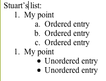
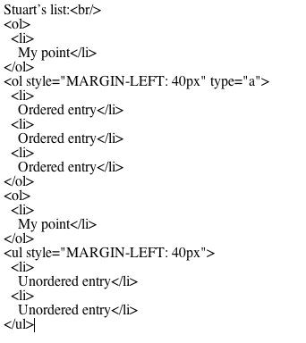
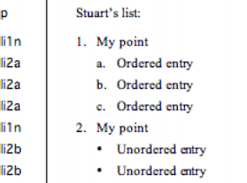
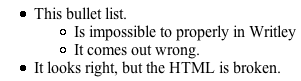
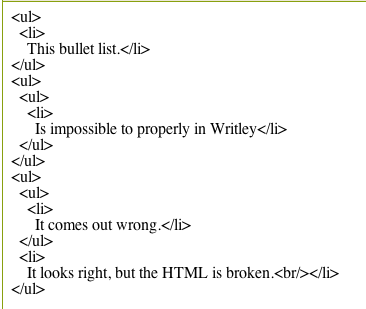

Yet another untitled post
2006-08-22
Writely, Google' online word processor has been re-launched. I read about this from Robert Scoble, who still wants an offline editor (like me).
I wrote about Writely a few months ago – I stopped short of saying “Writely Sux” but I had a few, um, issues. The same issues I've been having with word processors for years.
Look, you can't make a sow's ear out of a silk purse.
HTML is the silk purse and the the pig's ear is Microsoft Word.
The other ear would have to be OpenOffice.org Writer.
Writely is an online web-based editor. As you type in Writely, the application makes HTML, which your browser displays. It's also supposed to be able to import and export Word and OpenDocument formats.
Let's look at an example using my favourite word processing structure, the list.
Can we duplicate the example lists that Stuart Stuple from Microsoft sent me.
Stuart’s list:
-
My point
-
Ordered entry
-
Ordered entry
-
Ordered entry
-
-
My point
-
Unordered entry
-
Unordered entry
-
Results vary, but here's one of my honest attempts to format the list.
The result on screen is OK apart from the second item in the outer list starting again at 1 instead of 2:

And the HTML does not reflect the list nesting at all:

To fix it you have to highlight the whole outer list, click the number button a couple of times, demote the inner three items and go through a clumsy menu labeled 'Change' to re-number the inner list.
This is a classic user interface disaster. Behind the scenes there's structure, but the poor user can't divine it except by looking at the source. OpenOffice.org / OpenDocument has the same problem, only worse, partly because you can't easily look at the source the way you can in Writely. Sometimes you get what you should get, and other times you get very messy list structures – depending on what order you click things. Sometimes it's nicely nested HTML, sometimes it's HTML plus MARGIN-LEFT: 40px, sometimes it's unordered lists nested in each other in not so good way.
This really matters. If you take a Writely-generated HTML document and put it on your website with your own CSS then it is unlikely to display properly, what with all the inconsistent ways it handles list items.
The way Word handles the interface, with style names showing in the left margin is really clever.

If you're going to have a flat word processor like interface then the best way I can see to manage this kind of nesting is to imply structure with named styles. We seem to be able to do that with headings (Heading 1, Heading 2). Works for lists too, folks.
But word processor interchange aside, the Writely code is just broken. The indents are set using buttons that always indent the same distance (40px apparently) so why can't it work out how to create decent HTML? Even I could write code that would work out that list items with a bigger indent belong inside list items with smaller indents.
I also tried mucking around with bullet lists. Sometimes it works, and sometimes it doesn't.
-
This bullet list:
-
Is impossible to do properly in Writely.
-
It comes out wrong.
-
-
It looks right, but the HTML is broken.
Here's a screenshot (with a typo or two):

And behind the scenes?

Oh dear.
The first time I typed up the example the HTML was flawless, but then I clicked the indent and bullet buttons a few times to see what would happen and got the above.
I have also tried some experiments with downloading the document as an OpenDocument, making minor changes and re-uploading. Simple things seem to round-trip OK. But as I found last time I experimented with Writely quickly loses the plot with OpenDocument lists, as do I.
Maybe this application is good enough for your needs – if you're sticking mainly to a few headings and some plain text and you don't need to inter operate with offline word processors. If so, you're welcome to it.
It's not good enough for our needs, on the projects on which I work.
But it so easily could be if it used styles. Styles in word processing templates. Styles, or a user interface in Writely that was styles compatible. Plus a smart HTML converter that could nest things properly. See my other posts (1, 2) for detailed examples
When Microsoft previewed their new 'blog this' button in Word 2007 they copped heaps for the feeble HTML they spat out, but they took a great deal of trouble to engage with the community about the issues. This Writely thing has a lot of the same issues, but I'm not seeing much analysis.
All fixable. Imagine if it had the option to use a template like the ones we use in ICE.
Online word processing vendors, call me if you'd like help: +61 410 326955.